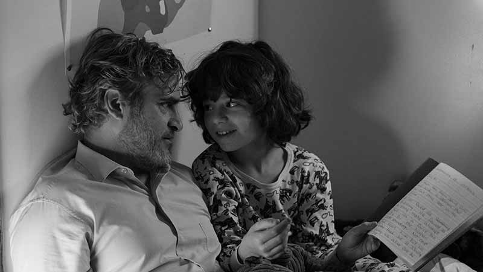
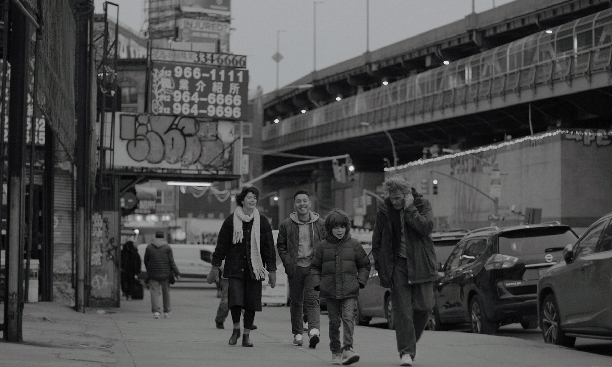
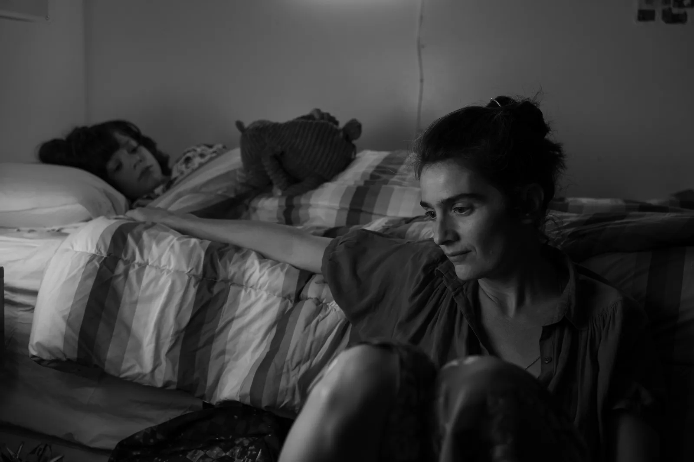

- C'MON C'MON -
- รู้สึกดีใจมากนะที่เรามีโอกาสได้ผ่านมาดูหนังเรื่องนี้จากการที่เพื่อนชวน บอกเลยว่าคุ้มค่าแก่การไปดูจริงๆ ด้วยความที่เป็นหนังขาวดำ มันทำให้อารมณ์ของตัวละครแต่ละตัวนั้นเอกส์เพรสออกมาได้น่าสนใจมากๆ
หนังจะเล่าผ่านตัวละครหลักสามตัวอย่าง Jesse (Woody Norman) ลูกชายสุดที่รักของผู้เป็นแม่อย่าง Viv (Gaby Hoffman) และคุณลุง Johnny (Joaquin Phoenix) ซึ่งเราจะได้เห็นความสัมพันธ์ทั้งในแบบลุงหลาน แม่ลูก และ พี่น้อง จากทั้งสามตัวละครนี้ ซึ่งในแต่ละความสัมพันธ์นั้นล้วนก็มีปัญหาของมันทั้งนั้น ซึ่งหนังถ่ายทอดออกมาได้ดูเป็นกันเองและน่าสนใจไปในเวลาเดียวกัน
- เราชอบความเฉื่อยของหนังมากๆ คือมันเฉื่อยด้วยความตั้งใจอะ ซึ่งมันดีมากสำหรับหนังแนวนี้ที่เมนพอยท์มันคือการ appreciate ชีวิตในทุกๆวันของเรา และเรียนรู้เรื่องราวต่างๆไปอย่างค่อยเป็นค่อยไป สำหรับเราแล้วเมสเซจของเรื่องนี้มันกว้างมากๆเลยนะ มันมีหลายประเด็นที่ก็เชื่อว่าหลายๆคนน่าจะหยิบจับมาได้ต่างๆกันออกไป แต่ล้วนแล้วก็มีจุดเชื่อมเดียวกันนั้นคือคำว่า “ชีวิต”
- ชีวิต (Life) คือสถานะการมีอยู่ของสิ่งๆหนึ่ง ที่เกิดขึ้น คงอยู่ และในท้ายที่สุดก็ต้องดับไป (Death) และใครจะไปรู้หละว่าในหนึ่งชีวิตของแต่ละคนต้องผ่านต้องพบเจอและต้องเรียนรู้อะไรมาบ้างกว่าจะมาเป็นแบบปัจจุบันนี้ 
- Jesse เด็กหนุ่มที่เหมือนจะยังมีคำถามในใจถึงอะไรก็ตามที่กำลังเกิดขึ้นกับครอบครัวของเค้าในตอนนี้ แต่ในขณะเดียวกันก็ยังเป็นเด็กที่ฉลาดทันคนและยังเล่นเชิงกับผู้ใหญ่ได้อย่างน่าเอ็นดูมากๆ เค้าเป็นตัวแทนการมองโลกผ่านแว่นอันแสนบริสุทธิ์ของเด็กคนหนึ่ง ที่จะพูดสิ่งที่คิดและทำสิ่งที่อยากทำออกมาโดยไม่ได้ผ่านการกลั่นกลองมากนัก ทุกอย่างมันบริสุทธ์มากๆ เหมือนกับตอนที่เค้าอัดเสียงริมชายหาดหรือเสียงต่างๆในเมือง แค่เสียงเล็กๆน้อยๆที่ลอดเข้ามาในหูฟังก็ทำให้เด็กคนนึงตื่นตาตื่นใจกับมันได้ไม่ยากนัก ในขณะเดียวกันเมื่อพบเจอกับสิ่งที่ไม่ดีเค้าก็ยังเลือกที่จะเก็บมันไว้แทนที่จะปล่อยมันออกมา 
- Johnny บอกก่อนเลยว่าชอบ Joaquin ในบทนี้มากๆ..Johnny เป็นตัวละครที่ให้เราได้มองผ่านแว่นของชายวัยกลางคนคนนึง
ที่ได้ผ่านมรสุมหลายอย่างในชีวิตจนมาถึงจุดที่รู้ว่าอะไรที่ปล่อยวางได้ก็ควรจะปล่อย แต่ในขณะเดียวกันเค้าก็ยังเลือกที่จะทำงานในการไปสัมภาสณ์เด็กในรัฐต่างๆถึงความหมายของชีวิต
ซึ่งมันนำมาซึ่งคำตอบหลายๆอย่างที่กลั่นออกมาจากมุมมองของเด็กที่มีต่อโลกใบนี้ และนี่แหละที่เป็นอีกหนึ่งหัวใจหลักของเรื่องที่เราชอบมากๆ

การที่หนึ่งคำถามมีคนตอบได้หลายคนมันทำให้เราได้ไตร่ตรองถึงมุมมองของแต่ละคนและหยิบจับอันที่เราชอบมาได้อย่างตามใจปรารถณานี่ก็เป็นเหมือนของขวัญที่หนังมอบให้กับคนดูกลับไปคิดกันต่อเนอะ
- Viv เป็นคุณแม่ที่ต้องแบกรับทุกๆอย่างไว้บนบ่า ไม่ว่าจะเรื่องลูกหรือเรื่องสามีที่ป่วยทางจิตก็ตาม เธอเป็นผู้หญิงที่เก่งและน่านับถือมากๆคนนึง ถึงแม้ว่าในสายตาของJesseนั้นยังมองว่าแม่เป็นไม่ดีบ้างในบางครั้ง แต่สุดท้ายแล้วทุกอย่างที่Vivทำไปนั้นล้วนก็เพื่อครอบครัวทั้งนั้น การกระทำอาจจะดูขมแต่ผลลัพท์และเจตจำนงนั้นล้วนเป็นรสหวานชื่นของความรักจากผู้เป็นแม่ทั้งนั้น
-สุดท้ายนี้เราก็อยากจะบอกว่า... https://youtu.be/ZsEvEFs2XZw
#C'monC'mon
ผู้เขียน: ประยศ ปลอดภัย (Red)
ภาพประกอบ: ประยศ ปลอดภัย (Red)